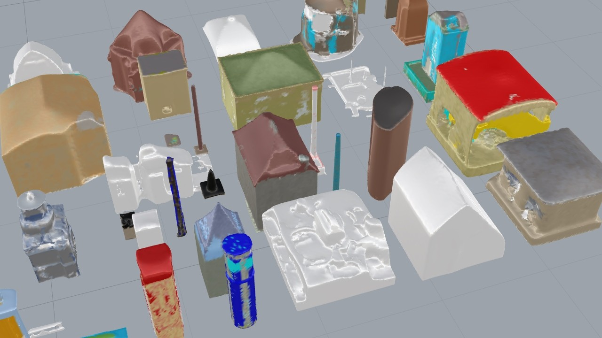

City Modelling with Generative AI: Tool or toy? 🔗
AI tools such as Chat-Gpt (text generation) and Dall-E (image generation) are making impressive leaps, allowing people to rapidly generate text, code and images from simple input prompts. The next frontier in generative AI may be 3D modelling, and OpenAI recently released the open source 3D modelling software Point·E. Could computer games, films and even architecture use these techniques to replace or improve manual city modelling?

33 3D mesh models, each generated from the text prompt "a buildng"
Read Full Post
🎼Trouver un musicothérapeute🎼 🔗
Ma femme est non seulement une superbe musicienne mais aussi une musicothérapeute : elle soigne les gens, ou les aide à se soigner eux-mêmes, avec de la musique!
J'ai crée cette carte des musicothérapeutes français avec la méthode suivante:
- Scrape le site web de la Fédération Française de Musicothérapie avec Requests et Beautiful Soup
- Géocoder les addresses de tous les musicothérapeutes via OSM (cette partie prend plusieurs minutes)
- Créer une carte avec un marqueur par musicothérapeute avec Folium.
- Enregistrer la carte sous format html
J'utilise la fonction suivantes pour générer mes tags HTML pour les marqueurs:
def tagged(txt:str, tag:str): str = txt.strip() if str: return f"<{tag}>{txt}</{tag}>\n" else: return ""
Aerodynamic Behaviour and Structural Safety of Tower Cranes 🔗
Upon moving to work at the French national scientific research organisation for the built environment, CSTB, I was surprised to see the attention to detail in tower crane studies - looking at the risk of strong winds, construction site exposure and swirling winds potentially setting tower cranes rotating.
Following some LinkedIn posts and academic articles on the subject I was invited by the UK Wind Engineering Society to give an online talk. I gave some of the history of the subject, the key factors influencing risk levels and the methods used by the CSTB and by French insurers to assess and reduce risk levels.
Game of life in Rhino 3D 🔗
Hello.
Prompted by this year’s Advent Of Code challenge I have implemented a 3D version of the game of life in Python in Rhino 7.
Here are some images renders from individual steps in my solution, followed by the code I used to generate them.

RhinoPython: may the source be with you! 🔗
Hello everyone,
I wrote a script to help me code in python and learn RhinoCommon and decided to share it with you 😜
As you may know, the rhinoscriptsyntax library is written in Python and uses rhinocommon functions, also in Python, under the hood. In order to look up the underlying code you can open up the full python file, you can use the inspect module or you can save the script below to your computer and run it each time you want to look up a particular function. For instance if you search for ‘bounding’ you get the following options:
Here comes the sun 🔗
I spend too much of my life sitting alone in an office working on my conputer or looking at my smartphone. My regular dose of fresh air comes from my bike - I ride to work and back regularly - but I also enjoy getting out into the garden when I can. Trouble is, I dont really enjoy gardening! I do get a lot of satisfaction from pruning the trees and shrubs, especially if it involves some climbing and as a result we now have an enormous pile of branches, leaves and twigs in the bottom of the garden. I recently found a new activity which satisfies my creative side and starts to diminish the stack o' cuttings : building 'dead hedge' style walls and fences.
Any way the wind blows 🔗
Adding leading zeros with Python
Various ways to add leading zeros to a number, for instance a wind direction, using Python. Available as a Jupyter Notebook
Generate a list of wind directions
First some definitions. The wind direction is measured in degrees clockwise from north and represents the direction the wind is blowing from. For instance an easterly wind, i.e. wind blowing from the east has a direction of 90 degrees. Let's generate 16 wind directions from 0 (north) to 337.5 (north by northwest).
```python interval = 22.5 # degrees assert 360 % interval < 0.001 n = int(360/interval)
directions = [interval * x for x in range(n)]
print(directions)
```
Read Full Post
Building a blog 🔗
I have had a few ideas for content to share recently and wanted a good way to do so. I wanted to find a good solution for blog publishing with a few criteria:
- Built using Python, editable in markdown so I can develop my skills.
- Simple to build and maintain - I am not a web developer and have no desire to become one. That said, I have been building websites on an amateur basis since the 1990s so I'm not afraid of writing a little html if I have to.
- Capable of incorporating Jupyter Notebooks
- Simple to deploy, preferably for free. I am hoping to do this via my internet provider but might go via GitHub failing that or even pay for a small cloud server.
- No initial need for interractive content.
I saw that the static site generators Pelican and Lektor were available. That sounds like a good solution as it should be quick and have few moving parts which could break. Lektor looked simple, welcoming and modern enough so I downloaded and installed it. I listened to Talk Python episode 160 as I did so and that encouraged me that I was on a good path.
Listen to Talk Python Episode 160 - Lektor (2018)
My initial experience has been great - I got going with no problem except that at the time of writing I have been waiting over a week for free to get around to setting up my personal web space so I can deploy the site. At least that has given me enough time to configure a basic blog and write my first 2 posts.
Post-deployment update
OK so I have gone for GitHub pages for hosting with a custom web domain - buying the domain name and specifying it in Lektor and in GitHub pages was enough to get it working properly with https - no need to update certificates every few months !